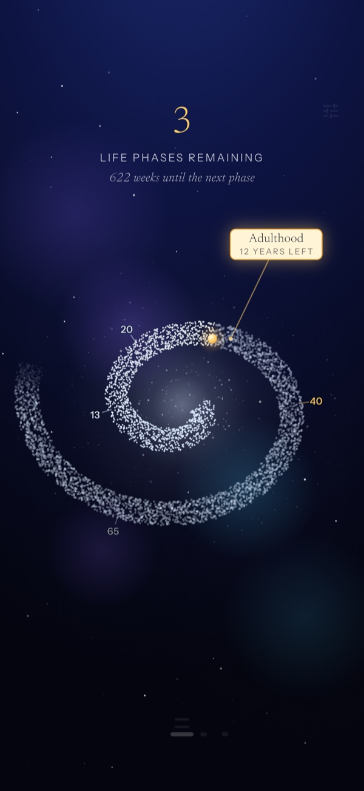
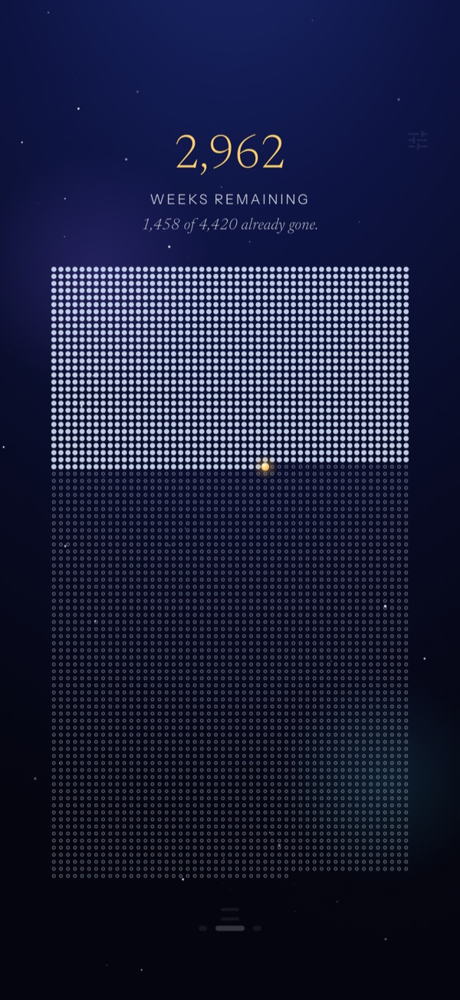
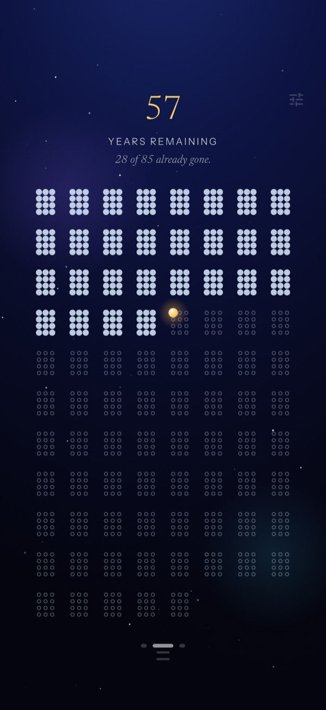
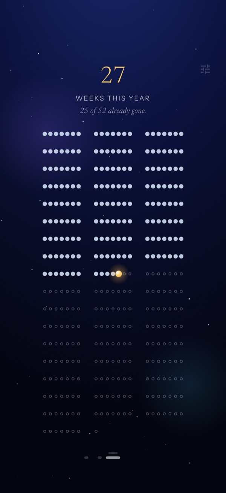

Life phases
Your phases as a Milky Way — what was, what is, what comes.

Your life as a dot
Your life as a board of dots. Most are already filled. Punctum shows you, calmly, how many remain — and turns the thought of the end into a compass for the present.
One-time purchase · no ads · no tracking

The board
Punctum shows your whole life as a board of dots. What is behind you is filled. What remains is open. And one bright dot is the now — the moment you are reading this.
Three lenses
Weeks, months or years — and three ways to see the same time.
Your phases as a Milky Way — what was, what is, what comes.

Year by year, at a glance.

Closer in — the weeks of this one year.

Calm and private
No server, no cloud, no tracking, no account. Nothing leaves your device.
No subscription, no in-app purchases, no hidden costs. Buy it once and it’s yours.
Home-screen widgets ground you — without a single notification.
Every dot was once the now.